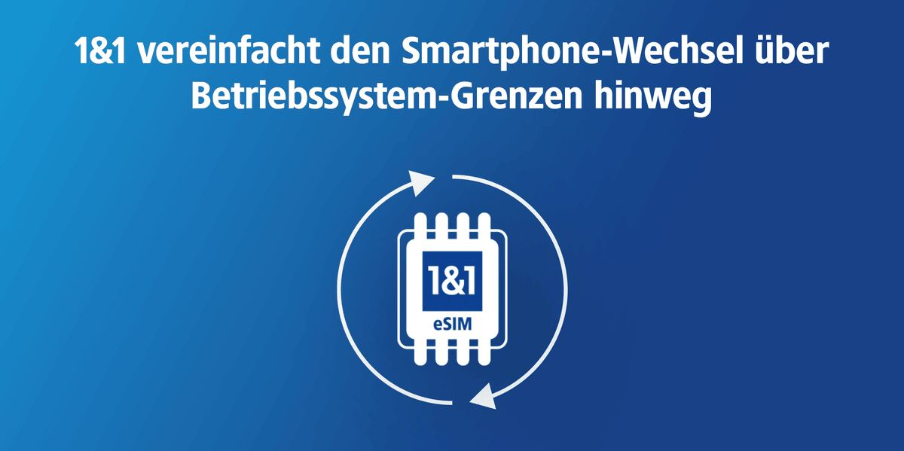

15. Oktober

1&1 ermöglicht plattformübergreifende eSIM-Übertragung zwischen Android und iOS Was das für uns heißtNahtloser eSIM-Transfer zwischen Android und iOS senkt Wechselhürden erheblich und setzt einen neuen Service-Standard für den deutschen Markt. Samsung Galaxy S26 Ultra 256 GB 328,14 €1&1 unter Vodafone (1.739,80 €) Promo 240 € Telekom Deutschland Bis zu 240 € Cashback in MagentaMobil TarifenIn zwei Minuten
-
Hochwertiges Smartphone-Bundle mit gratis TV-Inklusivebene - moeglich als Vorlage zur Steigerung der GigaTV-Durchdringung im deutschen Postpaid-Segment.Vodafone UK ↗
-
Nahtloser eSIM-Transfer zwischen Android und iOS senkt Wechselhürden erheblich und setzt einen neuen Service-Standard für den deutschen Markt.1&1 ↗
-
Globale Smartphone-Lieferungen im dritten Quartal um 20 Prozent eingebrochen - verteuert unsere Hardware-Beschaffung und erfordert flexiblere Angebote bei Tarif-Bundles.Omdia ↗

Auf einen Blick
- Telekommunikationsanbieter in Europa und Lateinamerika setzen verstärkt auf aggressive Festnetz- und Mobilfunkbündelungen, bei denen hochpreisige Smartphones mit unbegrenzten Datenvolumen und Streaming-Diensten verknüpft werden.
- Die Integration von Künstlicher Intelligenz und eSIM-Diensten treibt neue Partnerschaften zwischen Netzbetreibern, Neobanken und Technologiekonzernen voran.
- Regulierungsbehörden weltweit verschärfen die Kontrolle über Datenschutz bei Minderjährigen sowie den fairen Wettbewerb bei digitalen Abonnements.
Themen der Woche

Das Wichtigste
In dieser Woche zeigt sich auf dem globalen Telekommunikationsmarkt ein starker Trend zu aggressiven Bündelangeboten und plattformübergreifenden Partnerschaften. Betreiber wie Vodafone UK, Telefónica und Millicom investieren massiv in die Verknüpfung von Mobilfunk, Glasfaser und digitalen Unterhaltungsdiensten, um sich gegen den wachsenden Preisdruck zu verteidigen. Gleichzeitig treiben Anbieter den Ausbau fortschrittlicher Netzarchitekturen voran, darunter 10-Gbps-Glasfaserpiloten und erweiterte eSIM-Transferlösungen. Die fortschreitende Verschmelzung von Telekommunikation und Finanzdienstleistungen – etwa durch Kooperationen mit Neobanken – verdeutlicht die Notwendigkeit neuer Erlösmodelle jenseits klassischer Sprach- und Datentarife.
Was wichtig ist
- Vodafone Group Vodafone Business startet Express Capacity für Transportleitungen
- Vodafone Lowi bietet Rückkehrern 1 Gbit/s und TV ab 20 Euro
- Vodafone Group Vodafone startet zeitlich begrenzte Mobilfunktarif-Rabatte
-
Telefónica
Telefónica Deutschland startet Revolut Mobile als Neobanken-Marke
Was das für uns heißtNeobanken drängen über hiesige Netze in den Mobilfunk - eine Partnerschaft mit Finanzdienstleistern könnte auch unser Portfolio stärken.
-
Bitkom
Start der digitalen Brieftasche d-you am 2. Januar 2027
Was das für uns heißtIntegration der d-you Wallet für den digitalen SIM-Karten-Kauf – wir müssen prüfen, ob unsere Onboarding-Strecken zum Start bereit sind.
- BT Group BT Group startet neues integriertes TV- und Entertainment-Angebot
-
SimBlox
SimBlox präsentiert Whitelabel-Plattform für globale eSIM-Anbieter
Was das für uns heißtWhitelabel-Plattformen für embedded SIM erleichtern Drittmarken den Markteintritt - erhöht den Wettbewerbsdruck auf unsere eigenen Roaming- und Reisedaten-Optionen.

Die wichtigsten Meldungen
Vodafone UK - Google Pixel 11 Pro mit unbegrenzten Daten und TV (Produktlaunch, Dringlichkeit 5/5) Vodafone UK bietet Neukunden und Vertragsverlängern das Google Pixel 11 Pro zusammen mit unbegrenzten Daten und Vodafone TV Essential für ab 52,50 Pfund pro Monat an. Das zeitlich bis zum 11. November 2026 befristete Angebot soll Kunden Einsparungen von bis zu 1.260 Pfund ermöglichen Quelle.
Three UK - Unbegrenztes 5G-Heiminternet für 15 Pfund (Tarif/Pricing, Dringlichkeit 5/5) Three UK hat den monatlichen Preis für sein unbegrenztes 5G-Heiminternet auf 15 Pfund pro Monat bei einem 24-Monats-Vertrag reduziert. Vertragsgemäß steigt der Preis ab April 2027 auf 18,50 Pfund und ab April 2028 auf 22 Pfund Quelle.
Telefónica Deutschland - Revolut Mobile (Partnerschaft, Dringlichkeit 5/5) Telefónica Deutschland hat eine Partnerschaft mit dem Finanzdienstleister Revolut geschlossen, um den neuen Dienst Revolut Mobile im eigenen Mobilfunknetz anzubieten. Damit drängen Neobanken verstärkt als virtuelle Netzbetreiber in den deutschen Markt Quelle.
Vodafone España - 10-Gbps- und Wi-Fi-7-Piloten (Netz/Technologie, Dringlichkeit 5/5) Vodafone España hat einen dreimonatigen Feldversuch für Privatkunden in 282 Gemeinden gestartet, um XGS-PON-basierte 10-Gbps-Glasfaser und neue Wi-Fi-7-Router zu testen Quelle.
1&1 - Plattformübergreifender eSIM-Transfer (Produktlaunch, Dringlichkeit 5/5) 1&1 bietet Bestandskunden ab sofort die direkte Übertragung von Mobilfunkprofilen zwischen Android und iOS an, wobei physische SIM-Karten automatisch in eine eSIM umgewandelt werden Quelle.
Vodafone Spanien - YouTube Premium Lite (Produktlaunch, Dringlichkeit 5/5) Vodafone Spanien hat die günstigere Variante YouTube Premium Lite für 8,99 Euro pro Monat in sein Portfolio aufgenommen und bietet Neukunden zwei kostenlose Monate an Quelle.
Millicom - Investitionen in Kolumbien (Partnerschaft, Dringlichkeit 4/5) Millicom investiert als Muttergesellschaft von Tigo 8,5 Billionen kolumbianische Pesos (2,675 Milliarden US-Dollar) in den kommenden vier Jahren in Kolumbien. Gleichzeitig startet die Kampagne zur Zusammenlegung der Marken nach der Integration von Tigo und Movistar Quelle.
Metrotel - Kundenerwerb nach Telecom-Übernahme in Argentinien (M&A, Dringlichkeit 4/5) Metrotel zahlt 450 Millionen US-Dollar für sechs Millionen Mobilfunkkunden und Breitbandabonnenten, die Telecom Argentinien im Zuge behördlicher Auflagen abgeben muss Quelle.
Lowi - Aggressive Rückholangebote in Spanien (Tarif/Pricing, Dringlichkeit 4/5) Vodafones Zweitmarke Lowi bietet abwanderungswilligen Kunden Kombipakete aus 1 Gbit/s Glasfaser, zwei Mobilfunklinien sowie Streaming-Diensten für 20 bis 23 Euro pro Monat an Quelle.
Bitkom - Start der digitalen Brieftasche d-you (Regulierung, Dringlichkeit 4/5) Die kostenlose und freiwillige EU-weit gültige Wallet d-you startet am 2. Januar 2027 in Deutschland, um Identitätsnachweise und Vertragsabschlüsse digital zu ermöglichen Quelle.

Europa
Europäische Telekommunikationsanbieter setzen im Berichtszeitraum auf aggressive Preiskämpfe, erweiterte Glasfaserkooperationen und die tiefe Integration von Streaming-Diensten. Während etablierte Betreiber wie Vodafone und Telefónica neue Geschwindigkeitsstandards und Partnerschaften etablieren, reagieren Zweitmarken mit drastischen Rabatten zur Kundenbindung.
- Canal+ startet ein Kombi-Angebot für 24,99 Euro pro Monat im ersten Jahr, das eigene Kanäle sowie Netflix, HBO Max, Apple TV und Paramount+ bündelt Quelle.
- 1&1 und GlasfaserPlus haben eine langfristige Kooperationsvereinbarung geschlossen, die 1&1 direkten Zugang zu 2,7 Millionen zusätzlichen Haushalten im deutschen Glasfasernetz verschafft Quelle.

Deutschland
- Deutsche Telekom Die Deutsche Telekom treibt aktuell ihre KI-Strategie mit Fokus auf neue Ertragsziele, Hardware-Partnerschaften und automatisierte Kundenservices massiv voran.
- Telefónica / O2 Telefónica und O2 treiben aktuell ihre Wachstumsstrategie durch innovative Partnerschaften und Cloud-Angebote voran.
- 1&1 1&1 treibt derzeit den Ausbau seines Festnetz- und Mobilfunkangebots durch strategische Partnerschaften und Produktinnovationen voran.

Lateinamerika
In Lateinamerika prägen milliardenschwere Infrastrukturinvestitionen, regulatorische Fusionsauflagen und der Ausbau digitaler Zusatzdienste den Markt.
- Der Fahrdienstleister 99 hat eine auf künstlicher Intelligenz basierende Echtzeit-Support-Funktion gestartet, die Unfälle von Motorradfahrern automatisch erkennt und Rettungsdienste alarmiert Quelle.
- Der Telekommunikationsanbieter Algar hat eine Partnerschaft mit dem Grupo Decio geschlossen, um Telemedizin-Konsultationen für Fernfahrer an Straßenstationen zu vertreiben Quelle.

Afrika & Naher Osten
Netzbetreiber in der Region treiben den Ausbau von 5G-Standalone-Kapazitäten und regionalen Netzinfrastrukturen voran.

Asien & Ozeanien
Asiatische und australische Betreiber fokussieren sich auf kostengünstige Jahrestarife, Netztests sowie innovative Inhouse- und Event-Abdeckungen.
- Bharti Airtel bietet für 2249 Rupien einen Jahrestarif mit unbegrenzten Anrufen und 30 GB Datenvolumen an, der sich an preissensible Kunden richtet Quelle.
- Optus hat gemeinsam mit Ericsson als Erster in Australien die Lösung Indoor Fusion 8828 eingesetzt, um die Mobilfunk-Abdeckung in Innenräumen zu verbessern Quelle.

Technologie, Geräte & Regulierung
Zulieferer und Technologiekonzerne treiben die Entwicklung effizienter KI-Modelle und Endgeräte voran. Nvidia hat seine Nemotron-Modellfamilie für Server und Edge-Geräte erweitert, während Apple mit der Smart-Home-Zentrale HomeView für 299 US-Dollar neue Hardware in den Markt bringt Quelle. Im Bereich der Verbrauchersicherheit hat das Landgericht Köln Snapchat untersagt, den KI-Chatbot ohne ausreichende Rechtsgrundlage für personalisierte Werbung aus Kinderdaten zu nutzen Quelle. Zudem schränkt eine Erklärung des Europäischen Datenschutzausschusses den Betrieb smarter Brillen ein, wenn Statusleuchten verdeckt werden Quelle.

Muster der Woche
- Mehrere europäische und internationale Betreiber bündeln hochpreisige Smartphones wie das Google Pixel 11 Pro direkt mit unbegrenzten Datentarifen und integrierten TV-Diensten.
- Telekommunikationskonzerne und Zweitmarken verstärken ihre Rückholangebote (Retention) durch aggressive Kombinationen aus Gigabit-Glasfaser und Streaming-Flatrates.
- Die Integration von Finanzdienstleistern und Neobanken in bestehende Mobilfunknetze (wie bei Telefónica und Revolut) gewinnt stark an Bedeutung.

Worauf wir warten
2 von 5 in Bewegung
Kippt die Preisuntergrenze im deutschen Markt?
Eine Unlimited-Flat unter 35 Euro oder ein Anschlusspreis von null verschiebt die Untergrenze fuer das ganze Portfolio - und beides wird selten als Pressemitteilung angekuendigt.
- Unlimited-Tarif unter 35 Euro aktiv Vodafone UK bündelt Pixel 11 Pro mit TV und unbegrenzten Daten Vodafone UK · 2026-10-15
- Anschlusspreis faellt weg ruhend
- Preiserhöhung angekündigt ruhend
Erodiert eSIM das Roaming-Geschäft?
Reise-eSIMs nehmen Roaming-Erloese ab, ohne dass ein Betreiber den Vertrag sieht. Die Bewegung ist gut belegt, der Zeitpunkt nicht.
- Travel-eSIM-Anbieter wächst oder wird gekauft aktiv SimBlox präsentiert Whitelabel-Plattform für globale eSIM-Anbieter SimBlox · 2026-10-15
- Roaming-Preise oder -Erlöse verändern sich beobachtet T-Mobile führt sprachbasierten KI-Assistenten im Kundenservice ein Deutsche Telekom · 2026-10-14 Bouygues lagert internationales Roaming und IPX komplett aus Bouygues Telecom · 2026-10-14
Wird KI zum bezahlten Tarifbestandteil?
Eine KI-Lizenz im Tarif ist der erste Differenzierungs-Hebel seit Jahren, den Kunden auf der Rechnung sehen - und der erste, bei dem Vodafones Wettbewerber im deutschen Markt vorgelegt haben.
- KI-Assistent im Tarif enthalten beobachtet Google veröffentlicht neues KI-Spitzenmodell Gemini 4 Argon heise KI · 2026-10-14
- KI-Gerät eines Netzbetreibers ruhend
Zwingt die Regulierung zu einer Portfolio-Änderung?
Vorgaben zu Preisklauseln, Vertragslaufzeiten oder Kuendigungsfristen wirken unmittelbar auf jeden Tarif - und sie kommen mit Vorlauf, wenn man den Vorlauf beobachtet.
- Vorgabe zu Preisklauseln oder Laufzeiten ruhend
- Digital Networks Act / TKG-Novelle beobachtet BEREC fordert Wettbewerb als Kernziel des Digital Networks Act BEREC · 2026-10-14 Branchenkoalition fordert in EU Kupfer-Ausstieg zugunsten von Glasfaser DNA Europe (Koalition aus ANGA, BREKO, BATM u.a.) · 2026-10-13
Wird Satellit zum Endkundenprodukt?
Solange Direct-to-Cell ein Notrufdienst ist, ist es Technik. Sobald es ein buchbarer Tarifbestandteil mit Preis wird, ist es Portfolio.
- Direct-to-Cell wird buchbar ruhend
- Satellit im Tarif eines europäischen Anbieters ruhend
Diese Ausgabe als Foliensatz 4 Folien, für den Montagstermin